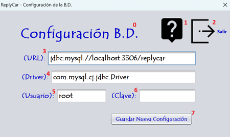

En este apartado se puede configurar la conexión a la base de datos.

0 - Título de la pantalla, descripción de lo que significa la pantalla.
1 - Botón para proceder a leer la ayuda de la aplicación.
2 - Botón para salir de la aplicación.
3 - URL para la conexión a la base de datos.
4 - Driver para la conexión a la base de datos.
5 - Usuario para la conexión a la base de datos.
6 - Clave para la conexión a la base de datos.
7 - Botón para guardar los datos de la conexión a la base de datos.
Nota: Pulsando F1 en la ventana principal, se abrirá esta página de ayuda.